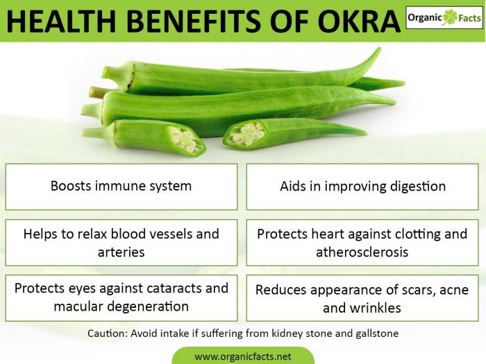
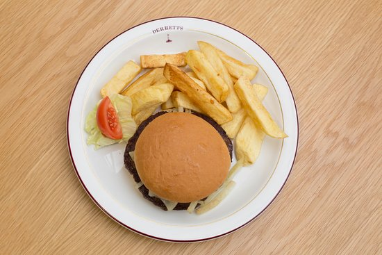

Cooking is like telenovela, we can also express our feelings through what we serve! Show them how you care, because food is essential.

Philippine Adobo is a popular dish and cooking process in Philippine cuisine that involves meat, seafood, or vegetables marinated in vinegar, soy sauce, garlic, and black peppercorns, which is browned in oil, and simmered in the marinade.
Philippine Adobo is a popular dish and cooking process in Philippine cuisine that involves meat, seafood, or vegetables marinated in vinegar, soy sauce, garlic, and black peppercorns, which is browned in oil, and simmered in the marinade.